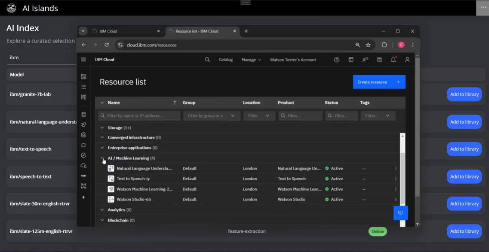

AI Islands Integration with Watsonx
MSc Dissertation Research

Abstract
[Insert dissertation abstract here]
Research Objectives
- Investigate the integration patterns between AI Islands and watsonx
- Analyze performance and scalability considerations
- Develop best practices for AI model deployment
- Evaluate user interaction patterns with AI services
Methodology
[Insert methodology description]
Key Findings
[Insert key findings]
Impact
[Insert impact and implications of the research]